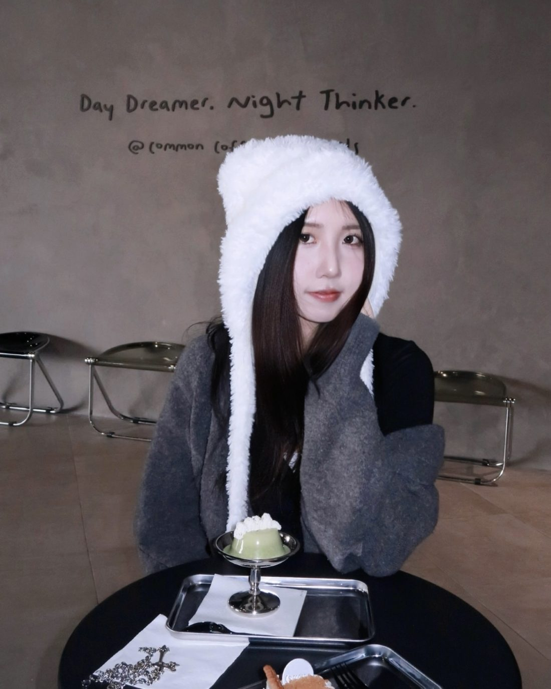

hi, i'm lydia.
Technical Artist & Game DeveloperUnity URP · Shader Graph · Blender · C#
Computational Media at Georgia Tech, class of 2028, with a minor in Industrial Design. I came to games from visual art, so I care how things look and how they run.
- Languages
- C# · Python · Java · C · JavaScript · HTML/CSS
- 3D & Engine
- Unity (URP) · Shader Graph · Blender · Nomad Sculpt · MagicaVoxel
- Design
- Figma · Aseprite · Adobe CC · Procreate · Git
tap the tank · press start for music
Games
Unity · tech art · environment & level design
3D
Modeling · shading · texture paint · animation
2D
Drawing · digital painting · mixed media
Apps
Product design · fullstack
Also: BalanceBar, an industrial-design project (scooter handlebar attachment, CAD).
About
Lydia HeAtlanta, GA · San Jose, CA

I came to games from visual art, so I care about how things look and how they run.
I'm a Computational Media student at Georgia Tech (Media & Games thread) with a minor in Industrial Design, graduating in May 2028.
Right now I build environments, 3D assets and levels for a research game at GT's Expressive Machinery Lab, and I lead the art pipeline for a 40+ person club game. Outside of that I sketch, take photos and play games with friends.